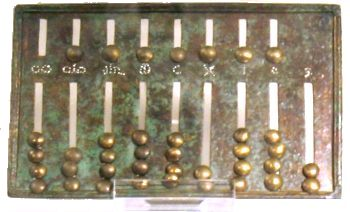
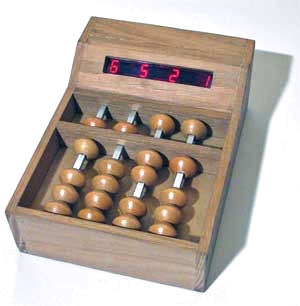

L'ABACO, (progenitore degli odierni pallottolieri) è uno dei più antichi strumenti
di calcolo utilizzato (2000A.C.) in Mesopotania in Egitto, in Persia in Grecia e presso gli antichi
romani (vedi foto a fianco).
L'ABACO, attualmente, è in uso prevalentemente in Asia ove non è stato ancora del tutto soppiantato
dalle moderne calcolatrici, in occidente esso conserva una valenza prevalentemente didattica.
L'ABACO è costituito da un insieme di gruppi di biglie in grado di scorrere lungo
percorsi verticali (colonne nell'abaco cinese e giapponese ) od orizzontali (righe nell'abaco russo).
La posizione delle biglie rispetto ad un setto di separazione presente in tutte le colonne (righe)
è rappresentativa di un particolare numero.
Nell'ABACO giapponese (Soroban) al disotto della barra di separazione sono disponibili, per ogni colonna,
4 biglie di valore unitario (in grado quindi di rappresentare i numeri da 1 a 4 se avvicinate al setto
di separazione) mentre al disopra del setto è presente una unica biglia che avvicinata
al setto stesso incrementa di 5 il valore indicato dalle biglie inferiori.
In definitiva è dunque posssibile rappresentare in ogni colonna i numeri da 1 a 9, mentre lo 0
corrisponde al caso in cui nessuna biglia è avvicinata al setto centrale.
Le colonne (righe) sono disposte in successione in modo da rappresentare nell'ordine le unità, decine, centinaia,
migliaia ecc.
Spostando le biglie in modo da eseguire anche le operazioni di riporto (incremento della colonna succesiva
ed adeguamento della colonna attuale) è posibile eseguire delle somme e delle sottrazioni.
Ad esempio, se il valore della colonna delle unità è 7 ed occorre aggiungere 6: si incrementa di 1 il valore della colonna
succesiva (decine) e si decrementa di 4 (10-6) il valore della colonna delle unità. (10 + (7-4))=13=7+6
Moltiplicazioni e divisioni vengono eseguite come addizioni o sottrazioni ripetute.
L'ABACO cinese attuale (Suanpan) dispone di 2 biglie sopra il setto di separazione e di 5 biglie al disotto
consentendo una diversa gestione dei riporti.
L'ABACO a 4 colonne da noi realizzato (foto a fianco) è costruito secondo il modello giapponese
(1 biglia sopra il setto e
4 biglie al disotto) consente di apprenderne rapidamente il funzionamento verificando la correttezza dei
riporti in quanto dispone di un visualizzatore che evidenzia il numero decimale corrispondente alla posizione
delle biglie.

Abaco romano
(Roma - Museo Nazionale Romano di Palazzo Massimo)
